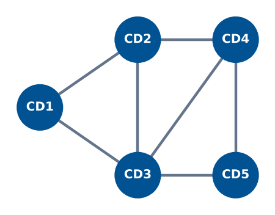

Diseño de Operación Logística: Red, Demanda y Estabilidad
Módulo 7 — Proyecto Integrador y Evaluación Final
Matemáticas 2 — Clase 31
Clase 31 — Proyecto Final
Incluidos en el script clase31_proyecto.m.

| Bloque | Tiempo | Tarea |
|---|---|---|
| Bloque 1 | 25 min | Análisis de la red: construir matriz de adyacencia, calcular grados, identificar nodo crítico, analizar impacto de su falla. |
| Bloque 2 | 25 min | Modelo de demanda: ajustar 3 modelos, comparar con RMSEtest, elegir el mejor, pronosticar 6 semanas. |
| Bloque 3 | 20 min | Normas y SLA: calcular L1, L2, L∞ para errores, diagnosticar incumplimiento del SLA, proponer acción correctiva. |
| Bloque 4 | 20 min | Estabilidad e inventario: calcular eigenvalores, radio espectral, inventario de equilibrio, IS con fórmula. |
| Bloque 5 | 30 min | Integración y decisión: conectar los cuatro análisis en una recomendación ejecutiva coherente. Completar informe. |
% Matriz de adyacencia (5 CDs) A_red = [0 1 1 0 0; 1 0 1 1 0; 1 1 0 1 1; 0 1 1 0 1; 0 0 1 1 0]; G = graph(A_red); nombres = {'CD1','CD2','CD3','CD4','CD5'}; % Grado de cada nodo grados = degree(G); [max_g, nodo_crit] = max(grados); fprintf('Nodo critico: %s (grado %d)\n', nombres{nodo_crit}, max_g) % Distancias minimas D_red = distances(G); dist_prom = mean(D_red, 2); % Vulnerabilidad: simular falla de cada nodo for k = 1:5 nodos_r = setdiff(1:5, k); G_r = graph(A_red(nodos_r,nodos_r)); n_comp = max(conncomp(G_r)); fprintf('Sin %s: %d componentes\n', nombres{k}, n_comp) end % Visualizar figure; h = plot(G, 'Layout','force', 'NodeLabel',nombres,... 'MarkerSize',12, 'NodeFontSize',12); highlight(h, nodo_crit, 'NodeColor','r','MarkerSize',16) title(sprintf('Red Logistica (%s = nodo critico)', nombres{nodo_crit}))
2 3 4 3 2 · Nodo critico: CD3 (grado 4) · al eliminar cualquier CD la red queda con 1 componente; sin CD3, CD1 y CD5 quedan con una sola conexión.% Datos (mismo generador que clase31_proyecto.m: 26 semanas) rng(2025); n = 26; t = (1:n)'; precio = 5.20 - 0.015*t + 0.04*randn(n,1); marketing = max(0, min(3, round(0.4 + 0.04*t + 0.4*randn(n,1)))); demanda = max(120, 200 + 6*t - 20*precio + 25*marketing + 9*randn(n,1)); % Division train/test (semanas 1-19 train, 20-26 test) n_tr = 19; idx_tr = 1:n_tr; idx_te = (n_tr+1):26; y_tr=demanda(idx_tr); y_te=demanda(idx_te); rmse_f = @(yr,yp) sqrt(mean((yr-yp).^2)); mape_f = @(yr,yp) mean(abs((yr-yp)./yr))*100; % Modelo A: lineal en t pA = polyfit(t(idx_tr), y_tr, 1); yA_te = polyval(pA, t(idx_te)); % Modelo B: cuadratico en t pB = polyfit(t(idx_tr), y_tr, 2); yB_te = polyval(pB, t(idx_te)); % Modelo C: multiple (t + precio + marketing) Xc_tr = [ones(n_tr,1), t(idx_tr), precio(idx_tr), marketing(idx_tr)]; Xc_te = [ones(7,1), t(idx_te), precio(idx_te), marketing(idx_te)]; bC = Xc_tr \ y_tr; yC_te = Xc_te * bC; % Tabla comparativa fprintf('%-20s %-14s %-14s\n','Modelo','RMSE_test','MAPE_test') modelos = {{'A: Lineal',yA_te},{'B: Cuadratico',yB_te},{'C: Multiple',yC_te}}; for m = 1:3 fprintf('%-20s %-14.4f %-14.2f%%\n', modelos{m}{1},... rmse_f(y_te,modelos{m}{2}), mape_f(y_te,modelos{m}{2})) end
% Errores de entrega (ton) e_entrega = [4; -9; 2; -1; 7; -3]; SLA_max = 6; % ton (SLA contractual) costo_correccion = 45; % $/ton % Calcular las tres normas L1 = norm(e_entrega, 1); L2 = norm(e_entrega, 2); Linf = norm(e_entrega, Inf); fprintf('=== ANALISIS DE NORMAS ===\n') fprintf('L1 (MAE x n) = %.2f ton -> MAE = %.2f ton/entrega\n', L1, L1/6) fprintf('L2 (RMSE x sqrt(n)) = %.2f -> RMSE = %.2f ton\n', L2, L2/sqrt(6)) fprintf('Linf = %.2f ton (error maximo)\n\n', Linf) % Verificar SLA fprintf('SLA contractual: ningun error > %d ton\n', SLA_max) if Linf > SLA_max [max_e, idx_v] = max(abs(e_entrega)); fprintf('INCUMPLIMIENTO: entrega %d tiene error %.1f ton (> %d ton)\n',... idx_v, e_entrega(idx_v), SLA_max) fprintf('ACCION PRIORITARIA: corregir entrega %d\n', idx_v) fprintf('Costo de correccion total (L1): $%.2f\n', L1*costo_correccion) end
L1 = 26.00 → MAE = 4.33 · L2 = 12.65 → RMSE = 5.16 · Linf = 9.00 · INCUMPLIMIENTO: entrega 2 tiene error -9.0 ton (> 6 ton) · Costo de correccion total (L1): $1170.00% Matriz de transicion (5 CDs) A_trans = [0.80 0.05 0.00 0.00 0.00; 0.10 0.75 0.10 0.00 0.00; 0.05 0.10 0.70 0.10 0.05; 0.00 0.05 0.10 0.80 0.10; 0.00 0.00 0.05 0.05 0.85]; % Eigenvalores [V_t, D_t] = eig(A_trans); eigs_t = sort(abs(diag(D_t)), 'descend'); rho_t = eigs_t(1); fprintf('Radio espectral: rho(A) = %.4f\n', rho_t) if rho_t < 1 fprintf('Sistema ESTABLE. Sin reabastecimiento, decae %.1f%%/periodo.\n',... 100*(1-rho_t)) end % Inventario de equilibrio b_repo = [30; 25; 20; 25; 20]; % reabastecimiento (ton/sem) x_eq = (eye(5) - A_trans) \ b_repo; fprintf('\nInventario de equilibrio:\n') CDs = {'CD1','CD2','CD3','CD4','CD5'}; for i=1:5, fprintf(' %s: %.2f ton\n', CDs{i}, x_eq(i)), end % Inventario de seguridad (con RMSE del mejor modelo) RMSE_modelo = 9.5; % ton: reemplazar por el RMSE_test del modelo elegido en el Bloque 2 z95 = 1.645; LT = 2; % semanas de lead time IS = z95 * RMSE_modelo * sqrt(LT); fprintf('\nInventario de seguridad (nivel 95%%, LT=%d sem):\n', LT) fprintf(' IS = %.3f x %.2f x sqrt(%d) = %.2f ton\n', z95, RMSE_modelo, LT, IS) fprintf(' Costo IS: $%.2f/semana\n', IS*3.5)
rho(A) = 0.9628 → ESTABLE, decae 3.7%/periodo · Equilibrio: CD1 272.32, CD2 489.29, CD3 700.89, CD4 937.50, CD5 679.46 ton · IS = 1.645 x 9.50 x sqrt(2) = 22.10 ton · Costo IS: $77.35/semana| Criterio | Logrado (3) | En proceso (2) | Inicial (1) |
|---|---|---|---|
| Análisis de red | Nodo crítico, impacto de falla, propuesta de contingencia cuantificada | Nodo crítico sin impacto cuantificado | Solo grafo sin análisis |
| Modelo de demanda | Tabla comparativa, RMSE test, pronóstico con IS | Un modelo sin comparación | Solo ajuste sin validación |
| Normas y SLA | L1/L2/L∞ calculadas, diagnóstico SLA, acción priorizada | Cálculo sin diagnóstico | Sin análisis de SLA |
| Estabilidad | Radio espectral, equilibrio \((I-A)^{-1}b\), IS correcto | Eigenvalores sin interpretación | Sin cálculo de equilibrio |
| Informe ejecutivo | 3 acciones priorizadas con números, coherente con el análisis | Recomendación sin jerarquía | Sin números de respaldo |
clase31_proyecto_GrupoN.m: completamente ejecutable sin errores.%% final del script).Clase 32: Evaluación Parcial 2
Proyecto Final + Evaluación: Cierre del Curso